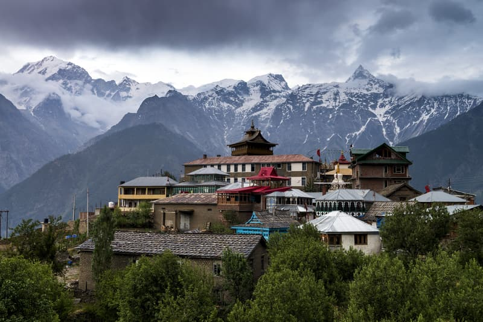
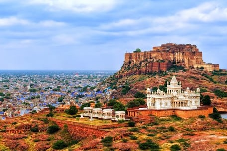
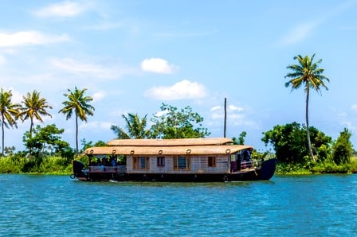
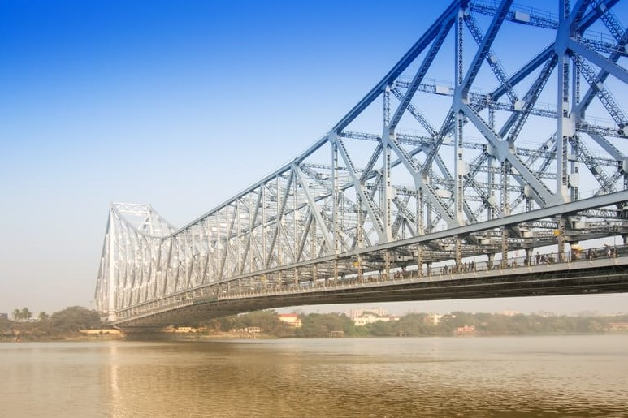

Himachal Pradesh
Himachal Pradesh lies in the foothills of the Himalayan mountain range, and you can see the snow-capped mountains amidst the lush greenery. There are a number of great hill stations to visit. Rock climbing, mountain biking, paragliding, and heli-skiing are some adventure activities conducted in this state.
Places to visit in Himachal Pradesh
- Kulu: Known as the valley of the gods, Kullu is situated on the banks of the Beas River and is one of the most frequented tourist spots.
- Manali: Manali is a town famous for the plethora of sporting activities it has to offer that will certainly up your fitness quotient.
- Shimla: Once the summer capital of the Britishers ruling India, with snow-capped peaks in the backdrop, Shimla is a picture-perfect location.
Rajasthan
Rajasthan will tell you stories about wars, victories, romances and men of valor. Rajasthan is the land of kings and has a rich history. You can see palaces, archaic monuments and staggering forts. It is also home to the largest Indian desert, Thar Desert, famous for its dunes and desert safaris.
Places to visit in Rajasthan
- Jaisalmer: In the heart of the Thar desert, the city reflects a golden hue from the sunlight and is nicknamed “The Golden City”.
- Jaipur: The capital of Rajasthan is home to many palaces with the City Palace and Amber Fort being the most visited.
- Jodhpur: Called the ‘Blue City’ thanks to its buildings that are painted with the colour, Jodhpur is an absolute delight to visit.
Kerala
Kerala is one of the prettiest states, rightfully dubbed ‘God’s Own Country’. Here you will find pristine beaches at Kovalam, Muzhappilangad and Varkala. Besides beaches, the state also has a plethora of historical monuments, enthralling waterfalls and some breathtaking hill stations. There are also plenty of ecotourism drives conducted to promote sustainable tourism.
Places to Visit in Kerala
- Alleppey: Dubbed the ‘Venice of the East’, Alleppey has many backwater channels interconnected in the city where you can rent houseboats.
- Munnar: Known for its tea plantations, Munnar is one of the most visited hill stations in Kerala.
- Kumarakom: With alluring flora and fauna as well as numerous lakes, Kumarakom is one of the most serene places in Kerala
West Bengal
West Bengal is the home to some grand mansions and British-era Palaces. Kolkata, its capital, is widely regarded as the cultural capital of India. Witness surreal landscapes and go for vibrant art and film festivals. You can also enjoy the theatre and plays.
Places to visit in West Bengal
- Darjeeling: Spread across a mountain range, you will be transported back in time when you witness the jaw-dropping locales.
- Malda: It is a city that is famous for its many archaeological sites. The city is also known for the varieties of mango it produces.